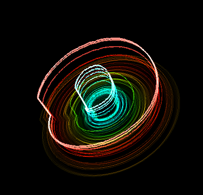
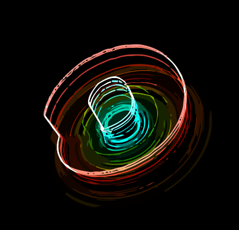
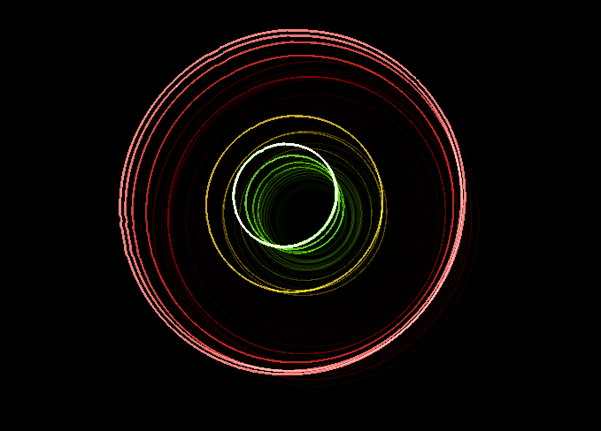
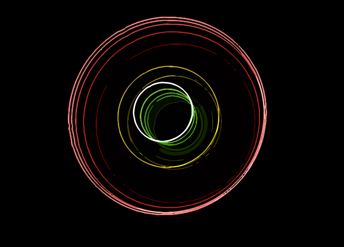
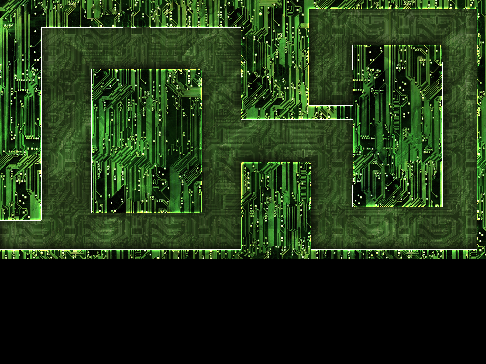
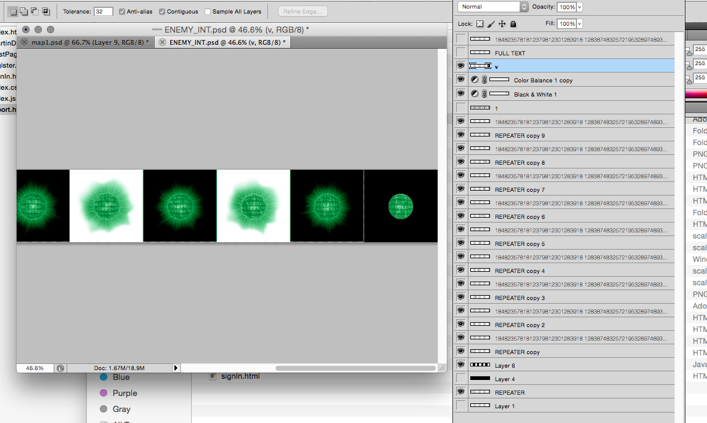

Report
Introdution
The idea of this website is to provide a quick, easy and communal platform for music blogging. Users can create an account and start writing articles about whatever they like. Each author will have a page like the index displaying their pieces.
Inspired by platforms like instagram, authors are encouraged to tag their work to make them searchable for other users. This way someone looking for a type of music can search all the posts using the tag filter form in the top bar.
InkScape
After settling on the name SongSphere, one of the first things I did was trying to create an icon for the site. I wanted to have something that related to the name, my first thoughts were to combine waveforms and and spheres. I searched google for inspiration and found this site
http://airtightinteractive.com/demos/js/reactive/I took some screen shots which I imported to InkScape and used the tracer options to vectorise. You can see these below:
 I was quite quite pleased with how the first one of these looked, but when It came to embedding it in the navigation bar at 30 x 30 px it just looked a mess, to0 small, too much detail. So I went back and went for something simpler. I took inspiration from the logos of chrome and Spotify, something that is clear and somewhat memorable. To make it match the name I kept things circular and tried to create the illusion of a sphere in the central ring using a gradient. I added a thin black stroke to each layer which made the image stand out more.

Gimp/Photoshop
Although I did not find a use for any custom made pngs on this site I do have some experience with both of these programs. When I was younger I studied art and graphic design at GCSE and photography at AS. I was particularly interested in digital art. I made many 'space scapes' and abstract fractal artworks in Photoshop. The only example I can find that has survived a hdd disaster at some time inbetween is this

More recently I made some graphics for our game in the group project unit (BASH defender, the tower defense game). I didn't have photoshop on my computer so I tried using gimp, however I found it difficult to get to grips with and resorted to investing in photoshop. The first thing I created was a background map for the enemies to pass through:
To create this I googled for " photoshop pattern circuit board" and found these. Which I applied to get the circuit board designs. I then layered over them some brush strokes using a brush pack I downloaded. I set these layers' blendmodes to 'overlay' and 'soft light' to give some texture and shading in areas. I then applied some layer effects: drop shadows, inner and outer glows to get the separation between the path and the walls. I then applied a number of filter layers: color balance, vibrance, curves and Brightness/Contrast to play with the colors and tones.
I also created a some sprite sheets of enemies:
We had decided to use a "virus" themed enemy, I started googling for images of viruses for enemies and played with a few things but nothing great came. Then I tried searching for ameoba and found this:

Which was perfect. I trimed as much of the background as I could using a large soft edged eraser. I knew that for the sprite to animate properly the guy would have to be placed precisely in the centre a whole number of times, to acheive this I sectioned up the canvas with alternating black and white panels of exactly the right width, then I used a guide(see right most panel below) which fitted to each section with a hole in the middle where the guy should go. For each panel I took a block of random chars/ints placed it over the top of the guy with an overlay blend mode. Using the magic wand tool and the cicular guide, I selected that area and applied a filter>distort>sphereize effect to create the illusion of 3D. For each tile I rotated the base image slightly, expanded (and then shrunk back to make a loop) it slightly to create a more life like effect. I also adjusted the text that was spherized each tile slightly to create the effect of the charecters scrolling around the sphere. Finally I set the colours using a color balance filter layer.
WebSite
I wanted the site to look as professional and stylish as possible. I decided the best way to achieve this was through frameworks. I looked into Bootstrap, Zurb Foundation and uikit, eventually settling for Bootstrap since, being a beginer, the vast number of tutorials based on this framework would be helpful. I read through the pages on getbootstrap.com to get the feel of it.
The first thing I add was the navigation bar, I started from this template. Inspired by facebooks navbar I added a subtle gradient to the background in css. I generated the gradient using this tool. I added borders fiting with the logo colour sceme to the top and bottom. I added my logo, this took some time to work out the correct placement to have it appear correctly in both the expanded and collapsed forms.
I wanted vistors to see a wide selection of articles, before filtering to their tastes. Inspired by this site I thought the best way to acieve this was through a mosaic style tiling. I found this library called masonry and later another which contained it: Isotope. Working from the guides on that page I built this js module to control the layout:
function buildMyIsotopeModule($container)
{
var $isotopeContainer = $container;
$isotopeContainer.imagesLoaded(initIsotope());
return { repeatLayout: repeatLayout };
function initIsotope() {
// init
$container.isotope({
itemSelector: '.content-preview',
layoutMode: 'masonry'
});
}
function repeatLayout() {
$isotopeContainer.isotope('layout');
}
}
Initially It didn't work properly because it was arranging them before the widgits had loaded and caused the size to change. I found the library imagesloaded useful for making isotope wait before arranging the tiles. I decided to use JQuery since I read it was well suited to the kind of site I wanted to make, also I have seen some job adverts looking for JQuery experience. I watched this (youtube: Zero to Hero with jQuery) video tutorial which gave me a thoughough introduction to it.
I wanted users to be able to filter the articles using the the filter bar, and also by clicking the tags attached on any of the articles. I added data-* tags to each of the preview tiles, to facilitate this, however, after researching the options I think it will be best done through the server since there will need to be some database of articles to search on.
A full article display can be viewed by clicking the read button on index. Using bootstraps grid system I have added a collapsing column to the right of the article which contains other posts from the author. I added a comment section to bottom of the page which I took from here and customised. The other pages were created from bootstrap form tutorials, these are self validating.
Testing
I have tested my site in Chrome, Safari, and Firefox. I havn't been able to test in IE since I have been working from my mac and the IE tab addon for Firefox is not supported. I have run my pages through totalValidator, the only errors come from the embeded player links, which theres not a lot I can do about since authors will add these them selves, and from the line in you template setting c="UTF-8" which you told us should be exact.